ONE PIECE
Gold Roger was known as the Pirate King, the strongest and most infamous being to have sailed the Grand Line. The capture and death of Roger by the World Government brought a change throughout the world. His last words before his death revealed the location of the greatest treasu
Continue Watching

Latest Episodes
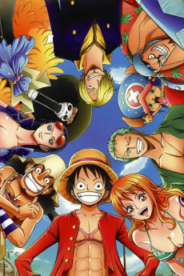
ONE PIECE
TV· 24m
The Classroom of the Black Cat and a Witch
TV· 24m
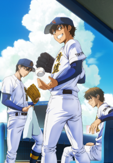
Ace of the Diamond act II -Second Season-
TV· 24m
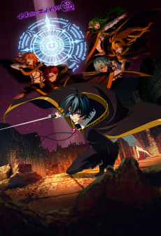
Wistoria: Wand and Sword Season 2
TV· 24m
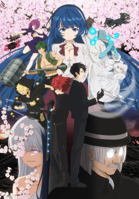
Mission: Yozakura Family Season 2
TV· 24m
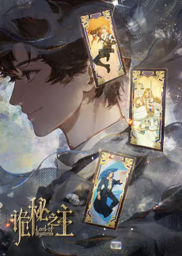
Lord of Mysteries Specials
ONA· 24m
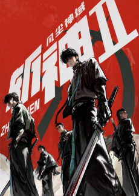
0.0Zhan Shen: Fanchen Shen Yu 2
ONA· 24m
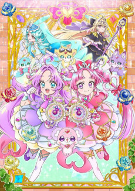
Star Detective Precure!
TV· 24m
Scum of the Brave
TV· 23m
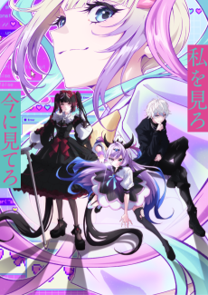
NEEDY GIRL OVERDOSE
TV· 25m
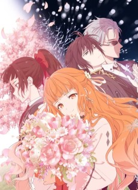
Agents of the Four Seasons: Dance of Spring
TV· 24m
MAO
TV· 25m
New on Site
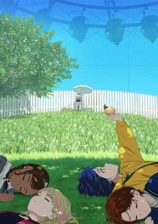
WONDER EGG PRIORITY
TV· 23m
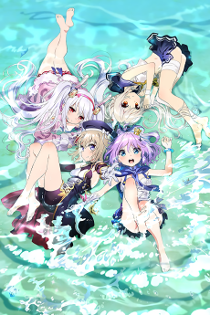
AzurLane: Slow Ahead!
TV_SHORT· 9m
Free! -Eternal Summer-: Forbidden All-Hard!
OVA· 24m
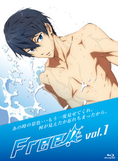
FrFr! ~Free! short movie~
SPECIAL· 5m
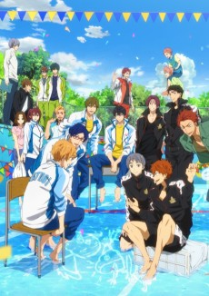
Free! -Take Your Marks-
MOVIE· 27m
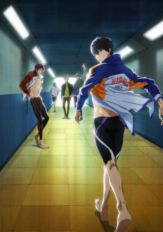
Free! -Dive to the Future-: Build-Up of Early Spring!
OVA· 23m
Free! -Dive to the Future-
TV· 24m
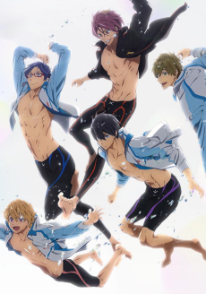
Free! -Eternal Summer-
TV· 24m
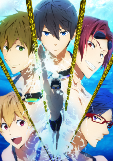
Free! -Iwatobi Swim Club-
TV· 24m
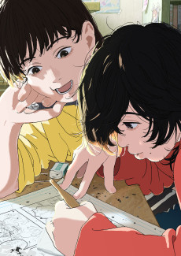
LOOK BACK
MOVIE· 58m
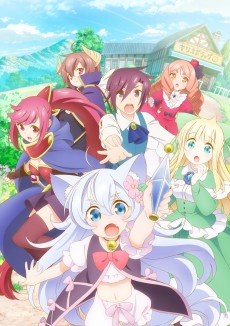
Drug Store in Another World - The Slow Life of a Cheat Pharmacist
TV· 24m
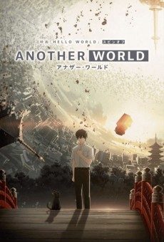
Another World
ONA· 10m
Upcoming
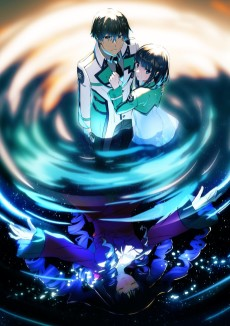
0.0Mahouka Koukou no Rettousei: Yotsuba Keishou-hen
MOVIE· 24m
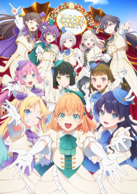
0.0Love Live! Hasunosora Jogakuin School Idol Club: Bloom Garden Party
MOVIE· 24m
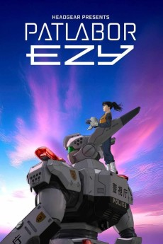
0.0Kidou Keisatsu Patlabor EZY
MOVIE· 24m
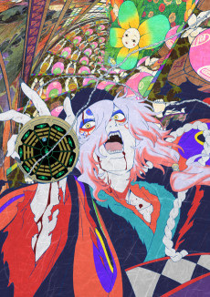
0.0Mononoke: Hebigami
MOVIE· 24m
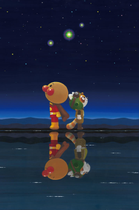
0.0Soreike! Anpanman: Pantan to Yakusoku no Hoshi
MOVIE· 24m
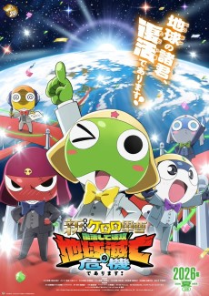
0.0Shin Keroro Gunsou Movie: Fukkatsushite Sokkou Chikyuu Metsubou no Kiki de Arimasu!
MOVIE· 24m
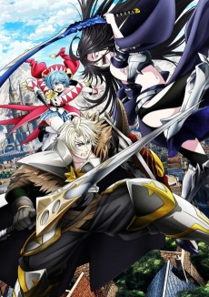
0.0Tsuihou Sareta Tensei Juukishi wa Game Chishiki de Musou Suru
TV· 24m
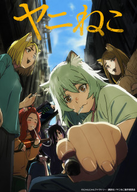
0.0Yani Neko
TV· 24m
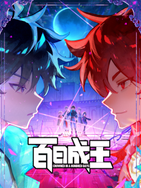
0.0Crowned in a Hundred Days
ONA· 24m
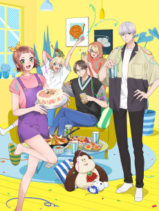
0.0Uchi no Otouto-domo ga Sumimasen
TV· 24m
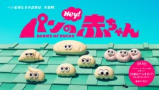
0.0Pan no Akachan (TV)
TV· 24m
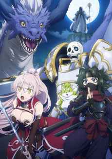
0.0Skeleton Knight in Another World Season 2
TV· 24m